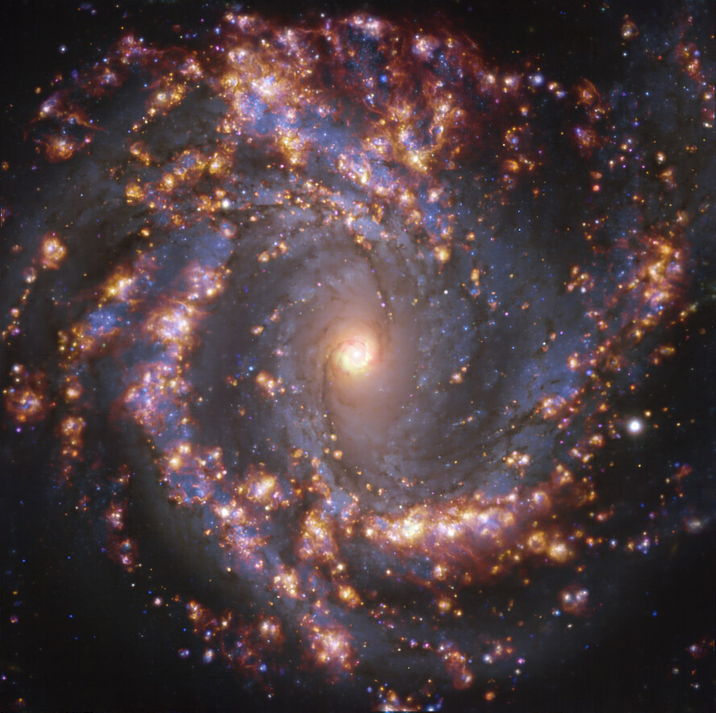

To understand galaxies, we must understand the physical processes and local conditions that drive their buildup of stellar mass through star formation. This evolution is regulated through the baryon cycle, the transformation of gas into stars and eventual ejection and recycling of that material to form the next generation of stars. The relevant physics occurs on the 50 pc scales of individual molecular clouds, star forming HII regions and supernova remnants, only now accessible in a diverse sample of external galaxies. My research group works within the PHANGS collaboration to use ALMA and VLT observations to identify and characterize the physical conditions in and around HII regions and ask: How does metal enrichment proceed within the disk? Does the injection of energy and momentum from stellar winds and supernovae trigger or suppress star formation? What is the source of ionization in the diffuse ionized gas? Addressing these topics ultimately requires us to map the internal ionization structure of star-forming regions, which will be undertaken in an ambitious new Local Volume Mapper (LVM/SDSS-V) spectroscopic survey of the Milky Way and Local Group galaxies.